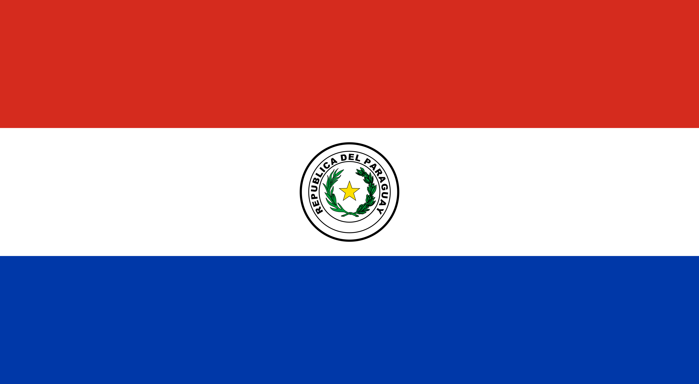

“Una experiencia transformadora”
“El circuito de las Misiones Jesuíticas superó todas mis expectativas. La historia, la cultura y la calidez de la gente me hicieron sentir parte de algo muy especial. ¡Volveré!”

Descubrí la esencia del turismo en el corazón de Sudamérica
Conocé las experiencias de quienes ya descubrieron Paraguay con nosotros.
“El circuito de las Misiones Jesuíticas superó todas mis expectativas. La historia, la cultura y la calidez de la gente me hicieron sentir parte de algo muy especial. ¡Volveré!”
“El Parque Nacional Cerro Corá es un paraíso. Hicimos senderismo, avistamos aves y dormimos bajo un cielo estrellado. Los guías de Paraguay Destino Natural son unos genios.”
“Nunca había probado una sopa paraguaya tan auténtica. El tour gastronómico por Asunción fue delicioso y aprendí mucho sobre la cultura local. ¡Recomiendo 100%!”